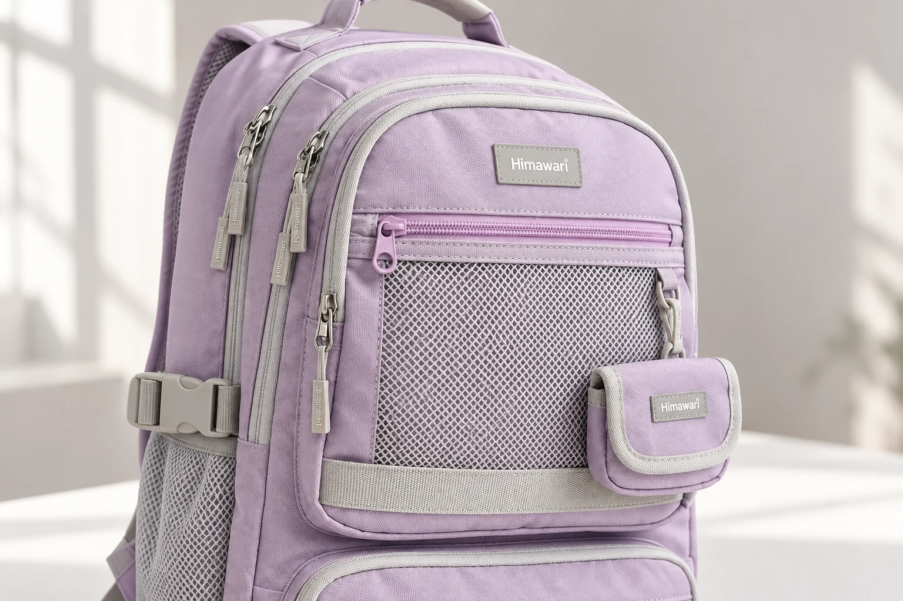

백팩 테두리의 파이핑과 바인딩은 어떻게 다를까
백팩의 포켓 둘레에 가느다란 선이 보이면 흔히 테두리라고 부릅니다. 제품 설명에서는 파이핑이나 바인딩이라는 이름을 만나기도 합니다. 둘 다 긴 띠를 쓰지만 가방 원단과 만나는 방식이 다릅니다. 파이핑은 원단을 잇는 봉제부 사이에 끼워 선을 남기고, 바인딩은 잘린 원단의 끝을 앞뒤로 감쌉니다. 이 차이를 알고 보면 비슷한 테두리도 어디에 붙었는지부터 살피게 됩니다.
히마와리 No.9291 라벤더의 실제 제품 사진에는 앞쪽 메쉬 포켓 주변과 아래쪽 포켓 둘레에 밝은 회색 테두리가 보입니다. 보라색 몸판과 경계가 나뉘어 테두리의 경로를 찾아보기 좋은 예입니다. 다만 원본에서 확인한 것은 바깥에 드러난 모습입니다. 이 모델의 테두리가 어떤 방식으로 봉제됐는지, 안에 심이 들어 있는지는 확인되지 않았습니다. 두 마감의 구조를 설명하면서 이 사진의 밝은 선을 함께 짚어보겠습니다.
파이핑은 봉제부 사이에서 둥근 선을 남깁니다
심을 넣는 파이핑은 긴 천 조각으로 코드를 감싸 만드는 방식이 전형적입니다. 띠의 가운데에 심을 놓고 반으로 접은 다음 심 가까이를 박으면, 한쪽은 둥글게 솟고 다른 쪽은 납작한 여유분으로 남습니다. Sailrite의 파이핑 제작 안내에서 이 접는 순서를 볼 수 있습니다. 밖에서 보이는 둥근 부분과 원단에 붙일 납작한 부분부터 구별합니다.
이 납작한 부분을 두 원단 사이에 끼워 함께 박고 겉으로 펼치면 봉제부를 따라 둥근 선이 드러납니다. Megan Nielsen의 봉제 예시도 두 원단 사이에 파이핑을 넣는 과정을 보여줍니다. 백팩 앞판과 옆판이 만나는 둘레에 이 방식을 쓴다고 가정하면, 가방 밖에서는 선을 보지만 선을 고정한 여유분은 봉제부 안쪽에 놓이게 됩니다. No.9291의 실제 제작 순서를 설명한 것은 아닙니다.
포켓 둘레에 둥글게 솟은 선을 원한다면 이런 구조를 떠올릴 수 있습니다. 여기서 심의 굵기와 심을 감싼 천의 폭은 서로 다른 치수입니다. 보이는 선이 가늘다고 안쪽에 끼워 넣은 천도 똑같이 좁다고 생각하면 단면을 잘못 그리게 됩니다. 사진에 드러난 둥근 부분만으로 심의 재료나 단단함을 알아낼 수도 없습니다.
바인딩은 잘린 가장자리를 앞뒤로 감쌉니다
바인딩에서는 띠가 원단의 잘린 끝을 돌아 반대쪽 면까지 덮습니다. 단면을 그려보면 가장자리를 사이에 둔 띠가 양쪽에 걸쳐 있는 모양입니다. Sailrite의 바인딩 설명은 이처럼 잘린 원단 끝을 접은 띠로 감싸 마무리하는 방식을 소개하며 가방에도 쓰인다고 설명합니다.
가령 백팩의 열린 포켓 윗단을 바인딩으로 마감했다면 띠는 포켓 천의 앞쪽에서 윗끝을 지나 뒤쪽으로 이어집니다. 포켓이 몸판에 붙는 봉제선과 포켓 입구의 마감은 서로 다른 자리가 됩니다. 앞면에서 띠가 보인다는 사실보다 띠가 어느 원단의 끝을 감쌌는지를 보는 편이 구조를 이해하는 데 알맞습니다. 이 예 역시 No.9291의 특정 부위가 바인딩이라는 뜻은 아닙니다.
완성된 백팩의 겉모습에서는 바인딩의 한쪽 면만 보일 수 있습니다. 납작하고 넓어 보이면 바인딩, 가늘어 보이면 파이핑이라고 이름을 붙이기보다는 띠가 원단의 뒤로 돌아가는지 봉제부 안으로 들어가는지 살펴봅니다.
둥근 모서리와 바이어스는 다른 정보를 말합니다
No.9291 앞포켓의 아래 모서리는 각이 날카롭게 꺾이기보다 둥글게 이어집니다. 이런 곡선을 보며 바이어스라는 말까지 떠올릴 수 있습니다. 바이어스는 원단의 결에 비스듬히, 보통 45도 방향으로 재단했다는 뜻입니다. 바이어스는 띠를 어떻게 잘랐는지에 관한 말입니다. 가장자리를 마무리하는 방식을 가리키는 파이핑·바인딩과 구별해서 읽습니다.
Sailrite의 바인딩 안내는 바이어스로 자른 띠가 곡선에 맞추기 쉽고 결을 따라 자른 띠는 긴 직선에 알맞다고 설명합니다. 파이핑 제작 안내에도 직선 재단과 바이어스 재단이 함께 나옵니다. 바이어스라는 말만으로 바인딩인지 파이핑인지 정할 수는 없습니다. 재단 방향과 봉제 위치는 별개의 정보입니다. 이 설명을 거꾸로 적용해 No.9291의 둥근 테두리를 바이어스 재단이라고 판정할 근거도 없습니다. 사진 속 곡선은 곡선으로 남겨둡니다.
No.9291에서는 지퍼 줄과 포켓 둘레를 나누어 봅니다
다시 실제 제품 사진으로 돌아오면 앞면 위쪽 메쉬 부분에 가로 지퍼가 보이고, 아래쪽에는 별도의 포켓이 놓여 있습니다. 밝은 회색 테두리는 이 포켓들의 윤곽을 따라갑니다. 지퍼의 맞물리는 줄, 포켓을 이루는 면, 그 면의 둘레를 차례로 짚으면 서로 가까이 놓인 선을 한 부품으로 합치지 않고 볼 수 있습니다. 테두리 이름을 붙이기 전에 어느 면의 경계인지부터 찾아봅니다.

이 가방의 확인된 외부 크기는 가로 31 × 세로 45 × 폭 15cm입니다. 전체 크기는 사진에서 포켓과 몸판의 위치를 이해할 참고가 되지만 테두리 띠의 폭이나 심 지름을 알려주지는 않습니다. 겉감이 나일론, 안감이 폴리에스터라는 제품 정보도 테두리와 심의 재료까지 정해주지 않습니다. 같은 가방에 붙어 있어도 별도로 확인해야 할 부품 정보입니다.
밝은 테두리가 있는 백팩을 비교할 때는 원하는 모습을 구체적으로 남길 수 있습니다. 포켓 면 위로 둥글게 솟는 선을 좋아하는지, 가장자리를 납작하게 감싸는 띠의 모습을 원하는지 나누어보세요. 이후 제작 설명에서 파이핑이나 바인딩이라는 이름을 만나면 그 이름이 가리키는 위치를 대조합니다. 어느 한 방식이 더 튼튼하거나 방수에 유리하다는 순위는 여기서 나오지 않습니다. No.9291 사진에서는 포켓 둘레의 밝은 선을 확인했고, 그 선을 붙인 방식은 아직 확인 전입니다. 구조의 이름을 알아도 보이지 않는 제작 내용을 채워 넣을 필요는 없습니다.